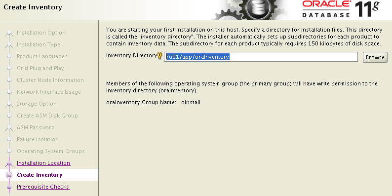

Install Grid
图面化安装
./runInstaller: /root/grid/install/.oui: /lib/ld-linux.so.2: bad ELF interpreter: No such file or directory
yum provides /lib/ld-linux.so.2
--安装glibc-2.17-292.el7.i686
Installing:
glibc i686 2.17-292.el7 base 4.3 M
Installing for dependencies:
nss-softokn-freebl i686 3.44.0-8.el7_7 updates 214 k
Updating for dependencies:
glibc x86_64 2.17-292.el7 base 3.6 M
glibc-common x86_64 2.17-292.el7 base 11 M
glibc-devel x86_64 2.17-292.el7 base 1.1 M
glibc-headers x86_64 2.17-292.el7 base 687 k
nspr x86_64 4.21.0-1.el7 base 127 k
nss-softokn-freebl x86_64 3.44.0-8.el7_7 updates 224 k
nss-util x86_64 3.44.0-4.el7_7 updates 79 k
yum install xclock libXext-1.3.3-3.el7.i686 libXext
#libXext 提供库：libXext.so.6


复制上面两行，修改与hostname一致的域名。grid的密码是oracle


[root@rac01 ~]# /etc/init.d/oracleasm scandisks
/etc/init.d/oracleasm is deprecated. Use 'oracleasm scandisks'
#使用oracleasm /usr/sbin/oracleasm
#当打开ASM空白时，用下面命令
#可通过日志：查看到缺少的包
cd /tmp/OraInstall2020-01-15_01-09-58AM
tail installActions2020-01-15_01-09-58AM.log
WARNING: /tmp/OraInstall2020-01-15_01-09-58AM/ext/bin/kfod: error while loading shared libraries: libaio.so.1: cannot open shared object file: No such file or directory
yum install -y libaio-0.3.109-13.el7.i686 libaio
yum install -y libaio-0.3.109-13.el7.i686 libaio



创建 目录，All 节点（Node）


yum install -y gcc elfutils unixODBC unixODBC-devel pdksh
yum install compat-libstdc++-33.x86_64 gcc-c++
yum install elfutils-libelf-devel ksh
yum install -y binutils compat-libcap1 cpp gcc gcc-c++ glibc glibc glibc-devel glibc-devel glibc-headers ksh libaio libaio libaio-devel libaio-devel libgcc libgcc libstdc++ libstdc++ libstdc++-devel libstdc++-devel libXi libXi libXtst libXtst make mpfr sysstat
报错:
linux rac集群安装过程报错ins_net_client.mk
原创Littleforest62 最后发布于2019-07-08 14:42:47 阅读数 185 收藏 展开 问题一：
在跑runInstaller时报错
Error in invoking target 'itnsping' of makefile '/u01/app/11.2.0/grid/network/lib/ins_net_client.mk'. See '/u01/app/oraInventory/logs/installActions2019-07-06_09-55-44PM.log' for details.
解决办法：
调整环境变量lib，把lib32调成lib64
调整后没有报此错
问题二：
继续跑又报下面的错


Error in invoking target 'mkldflags ntcontab.o nnfgt.o' of makefile '/u01/app/11.2.0/grid/network/lib/ins_net_client.mk'. See '/u01/app/oraInventory/logs/installActions2019-07-07_03-02-57PM.log' for details.
网查没有gcc包，肯定有 检查cpp包，没有
[root@jcyqdb01:10.176.34.110:/etc/udev/rules.d]# rpm -qa|grep cpp libmcpp-2.7.2-4.1.el6.x86_64 abrt-addon-ccpp-2.0.8-40.el6.x86_64 mcpp-2.7.2-4.1.el6.x86_64
但是cpp包不在我们的安装检查项内，这个包应该是安装rpm的依赖包
由于当时安装rpm包时是网上下的rpm然后rpm -ivh --nodeps --force强制安装的，没有解决依赖关系。
解决办法：(All nodes)
yum install -y cpp
glibc-devel-2.17-292.el7.i686 ##这个也是要的 通过rpm -qi glibc*查看
然后retry就过了
接着又报错：

Error in invoking target 'all_no_orcl ipc_g' of makefile '/u01/app/11.2.0/grid/rdbms/lib/ins_rdbms.mk'. See '/u01/app/oraInventory/logs/installActions2020-01-15_04-19-30AM.log' for details.
查看日志：
INFO: gcc: error: /usr/lib/libstdc++.so.6: No such file or directory
INFO: /u01/app/11.2.0/grid/bin/genorasdksh: Failed to link liborasdkbase.so.11.1
解决：
查看来自何包：yum provides /usr/lib/libstdc++.so.6
安装：
[root@rac01 tmp]# rpm -qi libstdc++-4.8.5-39.el7.i686
package libstdc++-4.8.5-39.el7.i686 is not installed
[root@rac01 tmp]# yum install -y libstdc++-4.8.5-39.el7.i686
yum install -y compat-libstdc++-33.i686